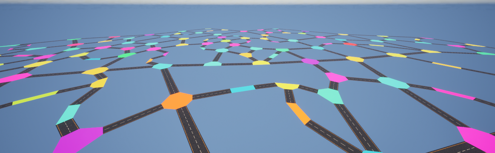
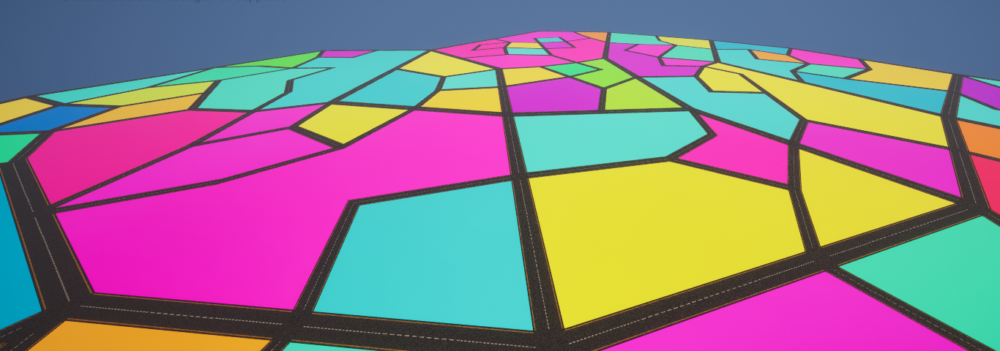
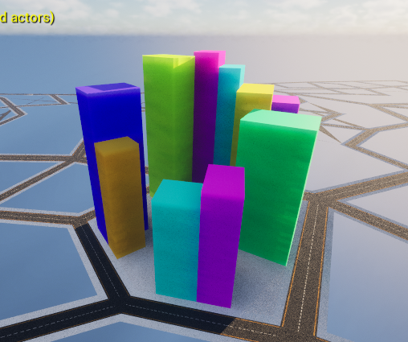

What I built
For an 8 week project in my third year at Breda University of Applied Sciences, I built a procedural city generator as an Unreal Engine plugin. Given a boundary and a set of parameters, it generates a full city layout at runtime using procedural mesh generation:
- a road network built as a graph
- road and intersection meshes with UV mapping
- city blocks found from the road graph and subdivided into smaller streets
- sidewalks and buildings placed around each block
- city regions with different building styles
Most systems went through several redesigns before they worked well. I focused on the geometry and the algorithms, not on visual polish.
Technical details
Graph-based road network
The city starts as a road graph. Seed nodes are placed inside a random boundary polygon and expanded by connecting them to neighbors under spatial constraints. The algorithm prevents overlapping roads, limits the number of connections per node and splits long edges, so the layout looks more natural.
Road and intersection geometry
From the graph data I generate road meshes and intersection geometry with UV mapping. Straight roads were fairly simple. Intersections had to be split into separate parts to get the texturing right, and this was one of the most time consuming parts of the project.

Face detection and subdivision
The road network is split into faces by walking along the edges in a clockwise direction until a closed loop is found. These faces are the city blocks. Larger faces are then subdivided recursively by generating new roads inside them, which gives a hierarchy of main roads and smaller streets.

Sidewalks and buildings
Sidewalks are generated as offset geometry along the block edges, with separate handling for convex and concave corners. Buildings are placed around the edge of each block with random dimensions. The system checks for overlap with roads, sidewalks and other buildings, and aligns corner buildings so they don't collide.

City regions
Each city block gets a region type based on its distance from the center, and each region uses different building styles. For example, residential blocks spawn houses with fences, while blocks closer to the center get taller buildings.
What I learned
I learned a lot about graph algorithms, procedural geometry and using Unreal Engine's procedural mesh system at a low level. It also showed me the value of sketching a problem before writing code. Several systems only came together after I stopped and worked out the geometry on paper first.